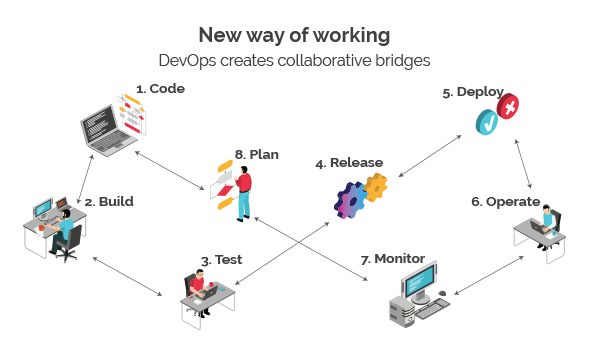
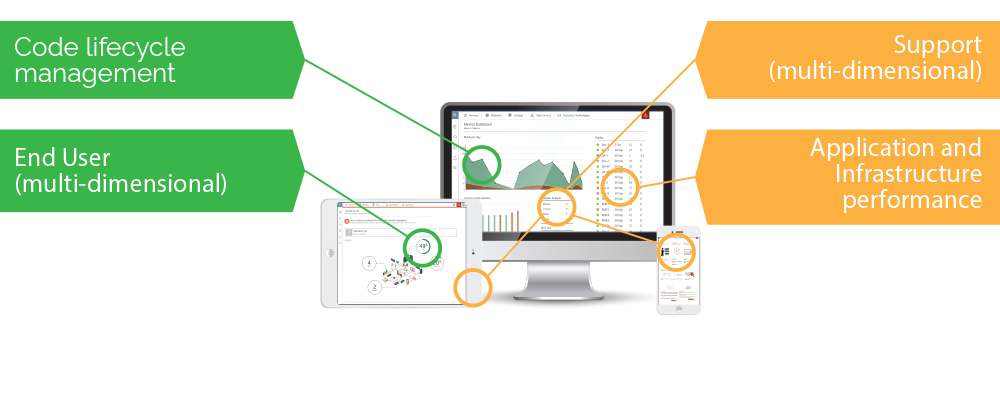

DevOps
Achieve quality and fast paced delivery through automation, collaboration and cultural change management.
Aqovia have been practicing and implementing DevOps for Enterprise and Government for more than 5 years. We partner with our clients to achieve a clear and transparent communications framework, leverage automation and implement tools to help teams achieve rapid productivity gains.
Our experts conduct a review of your existing technology applications and infrastructure and recommend the best approach to adopt a DevOps approach for product, development and operations.
Why use DevOps?
In simple terms - companies that incorporate DevOps practices get more done. With markets moving at such a rapid pace, software needs to deliver more quickly.
By adopting DevOps approaches, businesses can benefit from a range of technical, cultural and improvements:
- Faster pace of Development
- Greater quality assurance
- Improved communication and collaboration
- Happier end users
- Better applications and products
- More time to innovate
How it works
Software processes have changed significantly over the years. Traditionally, the process would involve several tasks performed by different departments:
Working in silos slows down the process. The DevOps approach offers a new way of working - a holistic approach, where everyone is involved throughout the entire service lifecycle, from the creation to the production support:
By establishing collaboration between Development and IT Operations you not only increase the production rate, but also the reliability, stability, resilience of the production itself.
Aqovia deploy software solutions using an agile framework, ensuring high product quality, greater customer satisfaction and a faster ROI.
The Aqovia DevOps toolkit and tool delivers Return on Investment and DevOps Intelligence through the implementation of:
The benefits
With Aqovia DevOps solutions, you will see the following benefits for your business:
- 46x more frequent code development
- 96x faster mean time to recover (MTTR)
- 440x faster lead time from commit to deploy
- 5x lower change failure rate